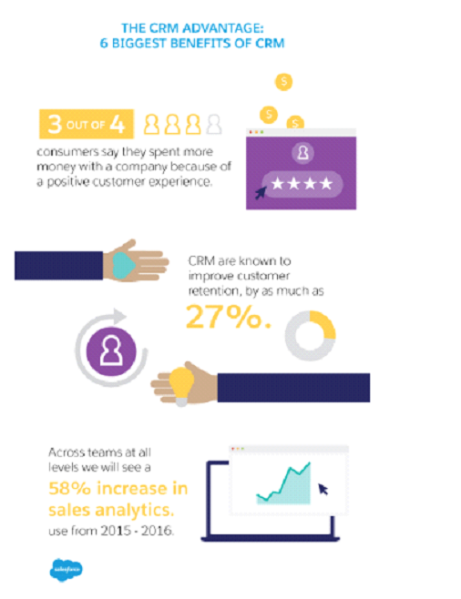

If you don’t have leads, your business is destined for failure. Leads are potential customers, and if you play your cards right, they can become spokespersons of your business. Of course, your organization will have various goals, but a significant portion of your goals must be dedicated to lead generation. Marketers utilize various channels to attract leads to their business and amplify their conversion rate, but these channels fail to deliver in most cases. If you’re in this situation, this article is for you. We present to you expert-backed 7 proven ways to pump your sales lead generation capabilities.

Build Prospect Confidence
As shown above, the return of investing on a CRM software is huge. For your business to prosper, you must know your customer. What are their interests? Do they need your service or product? Your development and sales team must focus on the client and offer practical solutions to his problems. Keep connected with your customers, and they’ll come to your business regularly. As you grow, you can still effectively scale to support growth into new markets while simultaneously maintaining your signature professional intimacy. For this, you must focus on reliable customer relationship management (CRM) software. With an automated CRM, every member of your organization can have a comprehensive view of customer relationships and a clearer picture of what to do next. Relaying your customer’s information takes place through reliable logged and shared data. Your organization members must know how they can retrieve relevant customer data and how to share it across the organization.
Produce Relevant Content
Expert marketer Dayna Rothman says content drives lead generation efforts. Your business must produce content, but that doesn’t mean you can create any content. Produce relevant content that appeals to and engages your target audience. Make sure your content strategy focuses on producing content-bottom, middle, and top that is entertaining, informative, helpful, and relevant without being overtly salesy. This will be much easier if you create buyer personas. With a precise profile of your ideal customer, you’ll be able to meet their needs. As shown in the chart below, simply focusing on SEO keywords doesn’t address your customer’s wants and whether your services and products solve their problems.
Separate Your Lead Generation and Sales Team
If you want to run a successful online business, lead nurturing is critical, and for that, you must separate your sales and lead generation team. According to Marketo, Lead generation refers to the marketing strategies of drawing interest to the service or product for developing a sales pipeline. However, a sales team is primarily focused on the exchange of services and products for money. In simple words, their main concern is selling what your organization has to offer.
As illustrated in the above definitions, sales don’t concern stimulating interest, and lead generation doesn’t focus on sales as that’s to be taken care of by the sales department. Your lead generation team must dedicate itself to creating awareness about what you have to offers, and the sales team must focus on generating revenue for your organization.
Bank On Social Media Lead Generation Strategies
Source: emarketer.com
As shown in the graph above, when it comes to lead quality, many marketers agree that social media marketing is the best bet. For now, social media isn’t going anywhere. In fact, their popularity has been seeing an upward trajectory. Every year, a new social media platform offers brands and customers new avenues to interact with each other.
To harness social media for lead generation, you must make sure that you’re utilizing your chosen platform socially. In simple words, interact with your followers. If they like your post, thank them. If they post a comment, make sure you rely on them, especially if it’s a question about your product or service. Social media engagement almost always leads to more leads because consumers are willing to purchase from companies that are willing to interact with them.
Source Clean Data
If you’ve already utilizing automation tools for your marketing strategy and want to take it up a notch to increase your lead generation efficacy, you should look at your data’s source. Are you reaching the right demographic? Data derived from a clean source eliminates randomness from your communication. According to renowned marketer Etrigue, 75% of companies underuse data and depend on a one-size-fits-all approach for communication. Solve this problem, and you’ll already be edging out 75% of companies.
CRM uses trends and customer demographic data to create personalized messages for potential customers. Clean data highlights purchasing habits, buying patterns, and other valuable demographics personalizing your message and boosting its effectiveness.
Keep the Data Clean
After you’ve sourced clean data, your job isn’t over. You have to keep it clean as well. Your sales team can rely on CRM to ensure that the clean data is kept clean, which means that every member update lead eliminating bad leads, marking down inaccurate information, and logging customer conversations all in the same place. You can boost future sales by sharing data on what sold the most and what failed. A centralized CRM eliminates the guessing work. You get a precise picture of your sales pipeline. You might think that it can be costly to keep your data clean, but when it comes to effective lead generation, the cost of bad data can be devastating, and research supports this. According to Sirius Decisions, every dirty record can cost businesses as much as $100. On the other hand, deriving and keeping data clean will cost a maximum of $10 or less.
Use Email to Generate Leads
Source: Keap
Even with the arrival of instant messaging platforms, email still remains a powerful tool for lead generation. More than 3.9 billion people across the globe use email, and you can reach more clients by adopting it as part of your lead generation strategy. For this, you must focus on several strategies as listed below:
Automation
You don’t have to spend hundreds and thousands of emails every day manually. Instead, you can rely on email automation tools to do this. You’ll be able to generate more leads, and you can use your time to focus on more important matters.
Segment your email lists
You must segment your email list and send personalized messages. Data shows that click-through is 95% more in segmented email campaigns. There are various ways of doing this, but the most common ones are interests, online behavior, and demographics such as age and gender.
Utilize triggered emails
If your lead is displaying particular behavior, such as signing up for your newsletter or browsing your product catalog, you must narrow them down with a triggered email. Sending out personalized emails whenever a lead displays particular behavior will significantly increase the conversion rate.
Conclusion
If you want your business to prosper, you must find effective ways to stimulate and grab customer interest. With an effective lead generation strategy, you’ll be able to achieve this. In this regard, the strategies mentioned above will prove to be fruitful for your lead generation efforts.
Author’s Bio
Kristin Mortis is a Marketing Manager with 8+ years of experience at TDInsights based out of Plano, Texas. She helps businesses deliver the strongest marketing turnaround with cutting-edge digital strategies and tools. She writes about B2B Marketing, Big Data, Artificial Intelligence, and other technological innovations. Connect with Kristin on Twitter to learn about the emerging practices being implemented in the B2B segment.
IVR India says
Social Media Management is one of the best way to generate leads, Social media is always one of the best platform to generate quality leads and increase more visibility of online pages (business pages) among potential visitors. You have described it well. Subscribed your blog…
Elaina M says
Great to hear that, we will surely publish more interesting and helpful articles moving forward, happy reading 🙂